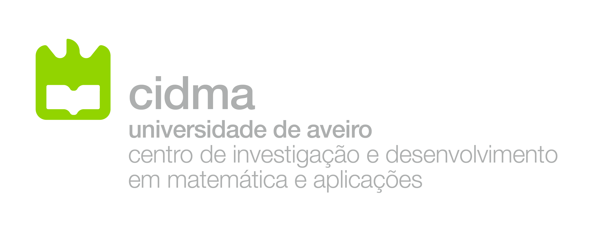
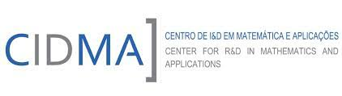
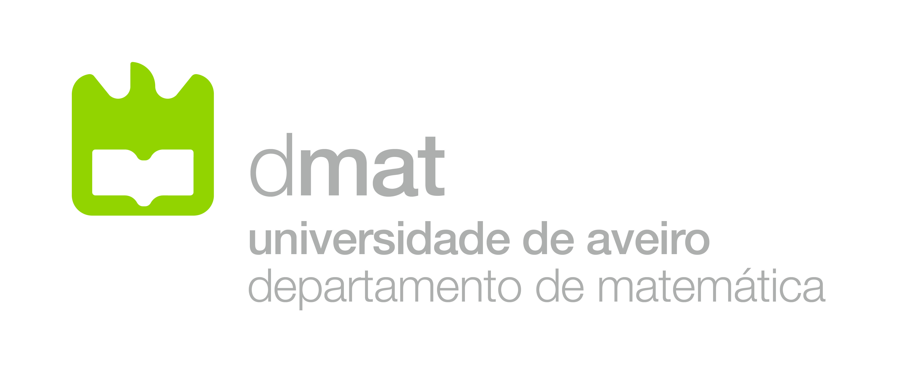
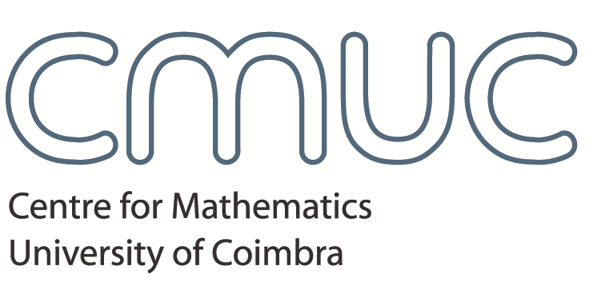
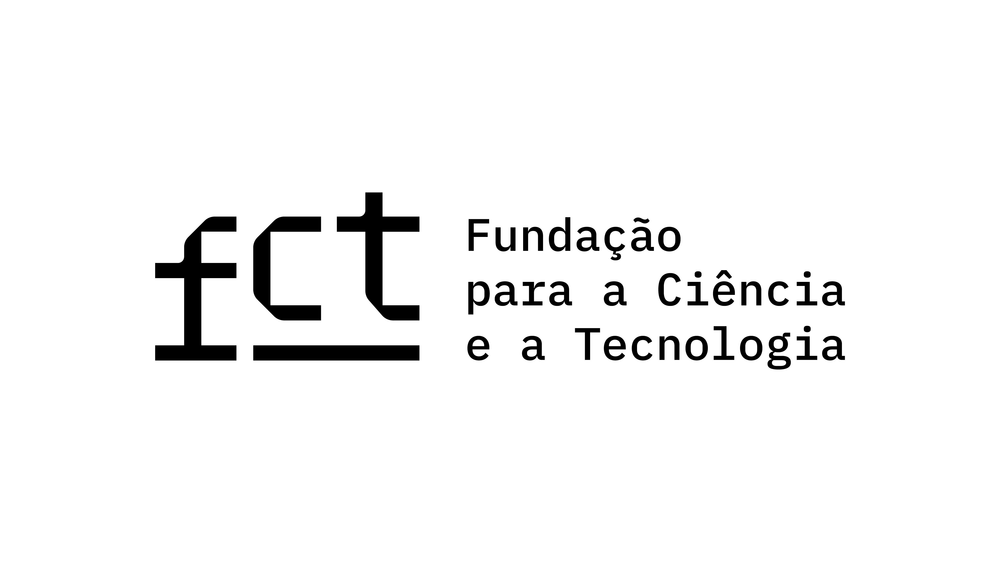
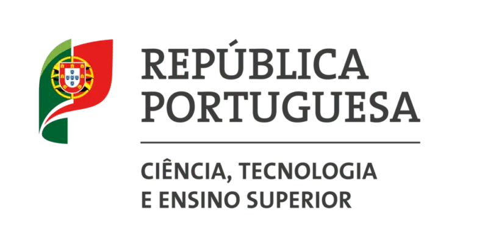

Registration
Deadline: September 6th.
Attendance is free, however please let us know in advance if you wish
to attend by sending an email to
dirk@ua.pt
or
ruiprezado@ua.pt.
Abstract Submission
Deadline: August 29th.
Submit your abstract by sending it to
dirk@ua.pt
or
ruiprezado@ua.pt.
Venue
Room 11.1.31, Mathematics Department, University of Aveiro
Address: Departamento de Matemática, Universidade de Aveiro, Campus
Universitário de Santiago, 3810-193 Aveiro, Portugal
Organising Committee
- Maria Manuel Clementino (CMUC, Universidade de Coimbra)
- Dirk Hofmann (CIDMA, Universidade de Aveiro)
- Kira Morozova (Universidade de Aveiro)
- Clarisse Oliveira (Universidade de Aveiro)
- Rui Prezado (CIDMA, U. Aveiro & Queen Mary University of London)
- Diana Rodelo (CIDMA, Universidade do Algarve)
- Beatriz Teixeira (Universidade de Aveiro)
- João Xarez (Univerisdade de Aveiro)
Sponsors





